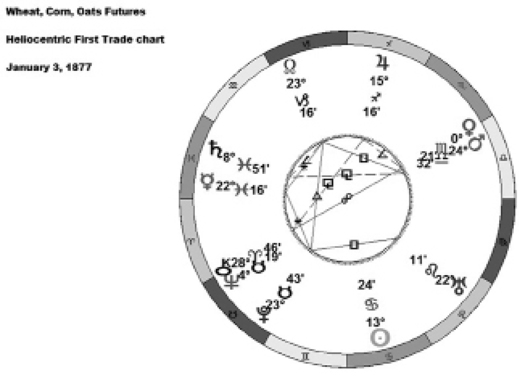

So far in this book the focus has been mainly on geocentric astrology in which the vantage point for determining planetary phenomena is the Earth. The New American Ephemeris for the 21st Century referred to earlier is based on geocentric astrology. Heliocentric astrology sometimes appears in older writings related to trading the commodity futures markets. Recall that in heliocentric astrology there are no house divisions, no Ascendant, Mid-Heaven or retrograde motions. Planetary aspects and sign changes are determined with a vantage point being the Sun. This seemingly simplified approach may well explain the decline in its popularity amongst astrologers. Even though the heliocentric approach may no longer be as popular, its effectiveness as a tool to assist traders and investors has not diminished.
As mentioned in the previous chapter, heliocentric astrology requires the use of an ephemeris containing heliocentric data. In the absence of such an ephemeris, a good venue for obtaining heliocentric data is the website www.astro.com/swisseph/swepha_e.htm. If you are using a software program to generate first trade charts, select the heliocentric format when entering the parameters to create the chart.
What follows in this chapter is a look at several commodity futures contracts where price action aligns very well with astrologic phenomena—some of it geocentric, some of it heliocentric. It must be stressed that when trading commodity futures, all the astrological techniques and phenomena discussed in this book up to this point will also apply. The examples that follow show certain additional aspects and phenomena that older literature sources have suggested apply to commodity futures. As a note of caution, trading on the futures markets entails much more risk than on the equity markets due to the use of leverage. Being aware of the larger degree prevailing trend is vitally important when trading commodity futures.
Gold futures
Gold futures started trading on the New York Mercantile Exchange on December 31, 1974.
Figure 4-1 Gold futures geocentric first trade chart
Figure 4-1 shows the first trade date chart for Gold futures in geocentric format. Notice how Pluto and Sun are 90 degrees aspect to one another. Note also how the North Node is at a 30 degree aspect to the Sun. Lastly, Venus is on the Ascendant which bodes well for some repetitive patterns.
The daily chart in Figure 4-2 shows Gold price action for 12 months starting October 2011. The un-shaded arrows drawn on the chart show the Sun-Pluto 0, 60, 90, 120 and 180 degree aspects. The shaded arrows show the Sun-North Node 0, 60, 90, 120 and 180 degree aspects. Note how these aspect dates align very well with short term trend turning points. While there remain many other swing bottoms and tops on the chart, the Sun-Pluto and Sun-North Node aspects align with enough occurrences to make a significant difference to the success of a trader who follows Gold futures.
Figure 4-2 Aspects affecting Gold futures prices
Neptune and Pluto also align very closely to Gold swing highs and swing lows at times of moving from being Retrograde to being Direct again. The weekly chart in Figure 4-3 shows Gold futures prices going back to 2008 and illustrates those periods when Pluto was retrograde. Notice that Pluto will be retrograde once a year. Observe that immediately after each retrograde event Gold prices register a swing high or low of varying magnitude.
Figure 4-3 Pluto retrograde events and Gold futures prices
The chart in Figure 4-4 is similar to that in Figure 4-3, except that it illustrates the times when Neptune is retrograde. Notice that at the conclusion of each Neptune retrograde event, Gold prices register a swing high or low of varying magnitude.
Figure 4-4 Neptune retrograde events and Gold futures prices
Whether you are trading Gold futures or investing in Gold mining equities, pay particular attention to geocentric Sun-Pluto and Sun-North Node aspects. Also watch carefully those times when Pluto and Neptune go from being retrograde to being direct.
Silver futures
The first trade date for Silver futures was July 5, 1933. The first trade chart using geocentric format is displayed in Figure 4-5. Note the Sun and Moon are nearly opposite to each other thus suggesting that these two bodies will figure prominently in Silver price swings.
Figure 4-5 Silver futures first trade chart
The chart in Figure 4-6 illustrates daily-nearest Silver futures prices during 2012. Un-shaded arrows depict Full Moons and shaded arrows are New Moons. Notice how these Moon phase events align closely with swing highs, swing lows and break-outs. The other phenomenon to note is the position of the Sun at 13 degrees Cancer in the Silver first trade chart. Zero degrees of Cancer each year marks the Summer Solstice. Hence, Silver futures started trading a mere two weeks after the solstice which means that the time around annual solstice and equinox events may play a role in Silver price fluctuations.
Figure 4-6 Lunar events affecting Silver futures prices
Whether you are trading Silver futures or investing in pure-play Silver mining equities, pay particular attention to Moon phases and times surrounding the annual equinoxes and solstices.
Copper futures
The first trade date for Copper futures was July 29, 1988. The geocentric chart shows that at the time Copper futures started trading, Sun and Mercury were 0 degrees apart and there was a lunar eclipse event going on as well. The chart in Figure 4-7 shows Copper futures prices going back to late 2011. Note how the Sun-Mercury conjunct events align very closely to price swings as well as price breakdowns and breakouts. This chart also shows two lunar eclipse events. Again note how these align with significant turning points in price.
Figure 4-7 Aspects affecting Copper futures prices
Whether you are trading Copper futures or investing in pure-play Copper mining equities, pay particular attention to geocentric Sun-Mercury conjunct aspects as well as eclipse events.
Crude Oil futures
Crude Oil futures started trading in New York on March 3, 1983. The first trade chart in geocentric format shows that Pluto is on the Descendant line and Sun-Neptune aspect each other at a 72 degree angle which is a unique aspect as 72 degrees is 1/5th of 360 degrees. This likely explains why older writings on financial astrology dating back over 25 years indicate that Sun-Pluto and Sun-Neptune aspects should be watched closely when trading Crude Oil futures. In Figure 4-8, the circled timeframes are those in which a Sun-Pluto aspect occurred followed within days by a Sun-Neptune aspect. Notice the distinct volatility during these aspects that an alert trader could take advantage of.
Figure 4-8 Aspects affecting Crude Oil futures prices
Old writings by Long and others mention Pluto and Neptune retrograde. Figure 4-9 illustrates weekly price action on Crude Oil futures dating from November 2010 to present. Notice how the periods of Pluto and Neptune going retrograde are associated with significant price highs or lows.
Figure 4-9 Crude Oil futures prices and Pluto-Neptune aspects
Energy market followers should watch for price trend swings on Crude Oil to align with geocentric Sun-Pluto and Sun-Neptune events.
Wheat, Corn and Oats futures
Wheat futures (as well as Corn and Oats futures) started trading in Chicago on January 2, 1877. Figure 4-10 shows the heliocentric first trade chart. Observations that immediately can be seen are Mercury and Jupiter in a 90 degree square aspect to each other, Mercury and Saturn nine degrees apart for a conjunction and also a Venus-Mars conjunction. Financial astrology books from the 1970s suggest that Mercury-Jupiter and Mercury-Saturn aspects are key to following price swings on Wheat, Corn and Oats.

Figure 4-10 Wheat, Corn, Oats heliocentric first trade chart
Traders of Wheat, Corn and Oats futures should pay particular attention to heliocentric aspects of Mercury-Jupiter and Mercury-Saturn. Heliocentric Mercury changing signs can also play a role in price swings. Geocentric Mars square Moon also holds potential for price swings on Corn futures.
Figure 4-11 illustrates a daily continuation chart for Wheat futures dating from October 2011. Overlaid on this chart are the 0, 90 and 180 degree aspects between heliocentric Mercury and Saturn shown as shaded dots. The shaded arrows are the 0, 90 and 180 degree aspects between heliocentric Mercury and Jupiter. There are many factors that determine grain futures prices including weather and government agency reports. But, nevertheless, Figure 4-11 does show that the Mercury-Saturn and Mercury-Jupiter aspects do align reasonably well enough with price swings. Traders of grain futures would be wise to watch for these aspects to occur.
Figure 4-11 Wheat futures prices and heliocentric Mercury-Saturn aspects
The financial astrology writings of Jeanne Long suggest that Wheat traders should also watch dates when heliocentric Mercury changes signs. Figure 4-12 illustrates the time frame of August 22-28, 2012. Using this hourly chart, an alert trader could have caught the move when Mercury moved into Gemini. On August 28, 2012 a downtrend ended when Mercury entered Cancer.
Figure 4-12 Wheat futures prices and heliocentric
Mercury changing signs
As for Corn futures, Figure 4-13 shows daily continuation price action of Corn futures dating from October 2011. The arrows are the dates of 0 and 180 degree aspects of heliocentric Mercury and Saturn. The shaded dots are dates of 0, 90 and 180 degree aspects of Mercury and Jupiter. Again there are many factors than can lead to swings in Corn prices, but the correlation of price swings to these heliocentric aspects is a unique tool that a trader can add to his or her arsenal of techniques. As noted above, heliocentric Mercury changing signs aligns to swings in Wheat prices. Although not shown here, there are also well-documented techniques that call for Corn traders to watch for heliocentric Mercury changing signs and for geocentric Mars to be square the Moon. Heliocentric Mercury will change signs approximately once every six days. Such dates that fall during the Monday to Friday trading week should be watched in particular. Geocentric Mars will be at a 90 degree aspect to Moon approximately two times each month.
Figure 4-13 Corn futures prices and heliocentric Mercury-Saturn aspects
Soybean futures
Soybean futures started trading in Chicago on October 5, 1936. Old financial astrology literature by Pesavento and others states that traders should watch heliocentric Venus as it changes signs. How this empirical notion was arrived at may be in part related to the heliocentric first trade chart alignment of Venus with Mercury and Neptune. Note that Venus is 90 degrees (square) to Neptune. Venus is further 135 degrees to Mercury. Neptune is also 135 degrees to Mercury. This configuration is called Thor’s Hammer by astrologers. Old literature also states that Soybean traders should be alert to those times when geocentric Mercury turns direct after being in retrograde. Figure 4-14 illustrates the heliocentric first trade chart of Soybean futures.
Figure 4-14 Soybean futures heliocentric first trade chart
The chart in Figure 4-15 displays Soybean futures price action for the latter part of 2012. The arrows point to those times when heliocentric Venus changed signs. Note the close correlation to changes in trend. Some of these trend changes were minor and best suited to short term trading. However, the Venus sign change in in mid-August led to a sizeable rally to the upside. The sign change at the end of August was the start of a larger sell-off. The sign change in mid-November was the start of a move up and the sign change in early December was closely aligned to the start of a nasty year-end move to the downside. Geocentric Mercury going from retrograde back to direct as it did in early August and again in late November can also be seen to correlate well to trend changes. Again, there are many factors that affect the Soybean trade including weather and export data, but Venus sign changes and Mercury turning direct seem to correlate all too well for a trader to ignore.
Figure 4-15 Aspects affecting Soybean futures prices
Soybean futures traders should watch for heliocentric Venus to change signs. Geocentric Mercury going from retrograde back to direct also holds potential for price swings.
Soybean Oil futures
Soybean Oil futures started trading on July 17, 1950. The heliocentric version of the first trade chart shows Mercury within a few degrees of being conjunct to Pluto. Figure 4-16 shows price action of Soybean Oil futures for the 12 months commencing in late 2011. On the chart, note the occurrences of heliocentric Mercury being 0 degrees to Pluto. Although not shown on this chart, traders also should take careful note of those dates when heliocentric Mercury changes signs of the Zodiac. Such sign changes occur three to five times a month.
Figure 4-16 Aspects affecting Soybean Oil futures prices
Soybean Meal futures
Soybean Meal started trading August 9, 1951. The heliocentric version of the first trade chart shows that Venus had just changed signs, entering Aquarius, thus providing a strong hint that Venus changing signs might figure in price swings for the futures contract. Also evident on the heliocentric first trade chart is a conjunction between Mercury and asteroid body Chiron which is situated between Saturn and Uranus. Chiron has an orbital period of about 50 years and although not often mentioned in financial astrology, is important nonetheless. The chart in Figure 4-17 shows price action for Soybean Meal for the six months following May 2012. Note how the times corresponding to sign changes align very well with price swings. Note also that those times when heliocentric Mercury is 0, 90, or 180 degrees to Chiron seem to also align very well.
Figure 4-17 Aspects affecting Soybean Meal futures prices
Traders of Soybean Meal futures should watch carefully for heliocentric Venus to change signs and for heliocentric Mercury to aspect asteroid body Chiron. Traders of Soybean Oil futures should watch carefully for heliocentric Mercury to change signs. Trend shifts also may be correlated to heliocentric Mercury being 0 degrees to Pluto.
Canadian Dollar and British Pound
Aspects between heliocentric Mercury and Saturn play a role in the price swings on Currency futures.
The chart in Figure 4-18 shows Canadian Dollar futures price action for 1 year starting from mid-September 2011. Canadian Dollar futures and British Pound futures both began trading on the Chicago Mercantile Exchange on May 16, 1972.
Figure 4-18 Canadian Dollar and British Pound
heliocentric first trade chart
In Figure 4-18, the timeframes associated with a 0 degree aspect between heliocentric Mercury and Saturn are denoted by a circle. The timeframes associated with a 90 degree aspect are denoted by a square. Note the close correlation between price trend changes and these Mercury-Saturn aspects. Knowing that a heliocentric Mercury-Saturn aspect is approaching, Canadian dollar and British Pound currency traders can use shorter term charts to watch for a suitable trade entry points.
The 30 minute chart in Figure 4-19 illustrates price action for British pound futures on August 31, 2012. On this date, heliocentric Mercury was at a 90 degree aspect to heliocentric Saturn. Note the rise of 100 points on the futures, a gain of $625 for the alert trader on a single contract.
Figure 4-19 British Pound futures 30 minute chart
Currency futures traders should be alert for heliocentric Mercury-Saturn aspects to influence the British Pound and the Canadian Dollar.
Japanese Yen
The Japanese Yen also responds well to astrological aspects.Traders for many years have been following the heliocentric Mercury-Pluto aspects. Figure 4-20 displays Yen futures price action with the 0, 90 and 180 degree heliocentric Mercury-Pluto aspects denoted by circled timeframes. Note the strong correlation to swing highs and lows. While the Mercury-Pluto aspects do not account for every pivotal swing in price, the correlation is strong enough that traders of Yen currency futures would be wise to watch closely for these Mercury-Pluto aspects to occur.
Figure 4-20 Aspects affecting Japanese Yen futures prices
Heliocentric Mercury-Pluto aspects can influence the Japanese Yen. Futures traders should be alert for these aspects to occur.
Euro
The heliocentric first trade chart for the Euro which became the official currency for the European Union on January 1, 2002 shows a clear connection of 120 degrees (trine) between Mercury and Jupiter. The chart in Figure 4-21 presents futures price action for the period December 2011 to November 2012. Note the various occurrences of heliocentric Mercury trine Jupiter and how they align very closely with swings in price.
Figure 4-21 Aspects affecting Euro futures prices
Heliocentric aspects that have Mercury 120 degrees to Jupiter are often associated with trend swings on the Euro currency.
Australian Dollar
The geocentric first trade chart for the Australian Dollar futures which started trading in Chicago on January 13, 1987 clearly shows Sun and Mercury conjunct (0 degrees) in the sign of Capricorn. The chart in Figure 4-22 presents futures price action for the period December 2011 to November 2012. Note the various occurrences of geocentric Mercury conjunct Sun and how they align very closely with swings in price.
Figure 4-22 Aspects affecting Aussie Dollar futures prices
Geocentric occurrences of Mercury 0 degrees to Sun often align with trend changes on the Australian dollar.
Live Cattle
Live Cattle futures first started trading on the Chicago Mercantile exchange on November 30, 1964. The chart in Figure 4-23 shows weekly price action dating back to 2008. Notice how Live Cattle futures exhibit either swings in trend and also sharp moves in price around the times corresponding to 180 days and 360 days from November 30. Note also how periods of Mars being retrograde are associated with significant price levels. The Mars retrograde event in late 2009 represented the lowest price level for Live Cattle futures between 2008 and late 2012. The Mars retrograde event of 2012 represented the highest price noted during this time frame. Clearly, Mars retrograde events should be taken very seriously by Cattle futures traders.
Figure 4-23 Aspects affecting Live Cattle futures prices
Traders of Live Cattle futures should be alert to times when Mars turns retrograde.
Lean Hogs
Lean Hog futures started trading on February 28, 1966 on the Chicago Mercantile Exchange. The chart in Figure 4-24 illustrates price action on a weekly basis dating back to 2008. If using geocentric astrology to follow Hog futures, note how the North Node of Moon changing sign is closely aligned with significant price swings. The heliocentric first trade chart for Lean Hogs shows that Sun is 90 degrees square to Mercury. The heliocentric squaring of these two bodies occurs six or seven times each year and these dates are indicated on the chart in Figure 4-24 as well. Notice how these dates all too often occur in very close proximity to swings in price.
Figure 4-24 Aspects affecting Lean Hogs futures prices
Traders of Lean Hog futures should watch for North Node sign changes. On a shorter term basis, heliocentric Mercury making 90 degree aspects to Sun is also important.
Lumber
Lumber futures started trading in Chicago on October 1, 1969. The chart in Figure 4-25 illustrates price action on a weekly basis for Lumber futures going back to 2008. Note how the occurrences of heliocentric Mercury being 180 degrees opposite Jupiter align very closely with swings in price. In fact, on the heliocentric first trade chart for Lumber futures, Mercury is within two degrees of being opposite Jupiter.
Figure 4-25 Aspects affecting Lumber futures prices
Lumber futures traders should watch for heliocentric Jupiter to make 180 degree aspects to Mercury.
30 Year Bonds
The geocentric first Trade chart of 30 Year Treasury Bond futures is a most interesting one indeed as Figure 4-26 shows. Mars is within two weeks of changing sign, is about to aspect Jupiter, is 30 degrees to Venus, is within orb of being 60 degrees to Sun and Saturn and is 90 degrees to Mercury. Financial astrology writings by Pesavento researched while preparing this book spoke very strongly in favour of watching those times when Mars was changing sign and when it was making notable aspects with other planets. Judging from the first trade chart, this now makes sense. Figure 4-27 illustrates price action on Bond futures dating back five years. Notice how the times when Mars changes sign align very well with significant price trend changes. Note also how the periods of Mars being retrograde align closely with some significant turning points in price.
Figure 4-26 30 Year Bond futures geocentric first trade chart
Figure 4-27 Aspects affecting 30 Year Bond futures prices
Bond futures traders should be alert to those times when geocentric Mars changes signs and also when geocentric Mars turns retrograde. The challenging factor at this time however continues to be the persistent intervention of the Federal Reserve into the bond markets which can derail astrological effects.